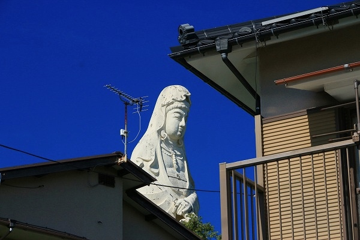
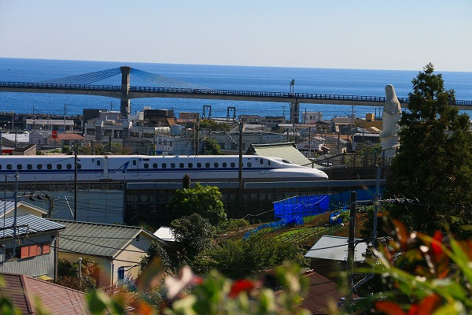

神奈川県は小田原の一駅となり。東海道線の早川駅。
この駅の近くには早川漁港があり、美味しいお魚を求めて地元の方から観光客まで大勢押し寄せる、お魚観光スポットなのだが。
ちゃあんと駅の山側にも着目していただきたい。
みなさ～ん、立派な観音様がいますよー！
この観音様、東海道線のみならず西湘バイパスや東海道新幹線からもよく見える、ある意味
日本有数の「目立つ観音像」な筈なのだが…その割にはあまり人の口に登らない。
まあ、実際に西湘バイパスは丁度東名高速からの合流点付近だし、新幹線では小田原過ぎてすぐトンネル入る直前だし、見逃しがちな立地なんだよね…。
…というわけで
立地の割には知名度低い可哀想な観音様。
電車を降りる客は観音様などには見向きもぜず漁港のある方へと一目散に消えていくのであった。
イイんです。そんなもんなんです。判ってます。人気ないの。
みんなアジの干物とアジフライとお刺身で頭が一杯なの。
みんな港に向かう中、あたしゃ独り東海道線のガードを潜るのです…観音様に会いに…
しばし歩くと細くややこしい道をくねくねと登ることになる。
車は…一応駐車場とかあったけど運転に自信が無い人は徒歩が無難かなあ。
やがて東善院というお寺が現れる。
その境内に件の観音様はおわすのである。
ドーン。
魚籃大観音様である。
おお、やっぱしアジフライより魚籃観音様でしょ！カッコイイ！
坂の上にあるので想いの他大きく見える
高さは
13メートル。
青空に真っ白なお姿が美しい。
カゴの中には勿論お魚が入っている。
魚は下から見るより駅から見た方がよく見えたね。
足元の台座は富士ぼく積みの岩山風になっていた。
由来書によれば建立は
昭和57年。
海上安全、大漁満足、魚介類供養、日本の平和祈願、殉国英霊並びに大戦犠牲者の冥福を祈念して建立したとの事。
この昭和57年頃というのはある意味大観音建立における時代の分かれ目だったりする。
戦後の大観音ブームの推進力が戦死者供養だったのに対してこの頃から観光向けの大観音が建立され始めるのだ。
（詳しくは君島彩子氏の名著
観音像とは何かを参照されたし）
つまり
大観音の存在が慰霊から観光へとシフトしていく過程のただなかにある観音様なのだ。

この観音様、遠目に見るとビシッと見栄えが良いのだが、近寄ると案外住宅街の中に埋もれている感じだ。
時折、ビックリするような爆音で新幹線が通り過ぎていく。
よし。新幹線と観音様のツーショットを納めてみるか。
…とは思ったものの、案外ベストポジションが見つからない。
欲を言えば海と観音様と新幹線が一緒に納まったら最高だね。
観音様の背後に新幹線が走っているのでそのまた背後の裏山に登ってみる。
お、小田原城が見えるじゃん。
そんなこんなで何とか納めたのがこちらのショット。

だから何だと言われればそれまでだが、海と大観音と新幹線が一緒に撮れたので自分的には大満足なのだ。
水平線ズレてるとか言わないでよね…。
で、早川漁港へ移動し、観音像を見てみた。

海上から拝める事を意図して建てられたというだけあって港からもよく見えた。
という訳で魚籃観音様、後から前からたっぷり堪能させていただきました！
よし、後はアジフライ！＆アジのたたき！＆刺身！＆ビール！＆ビール！…